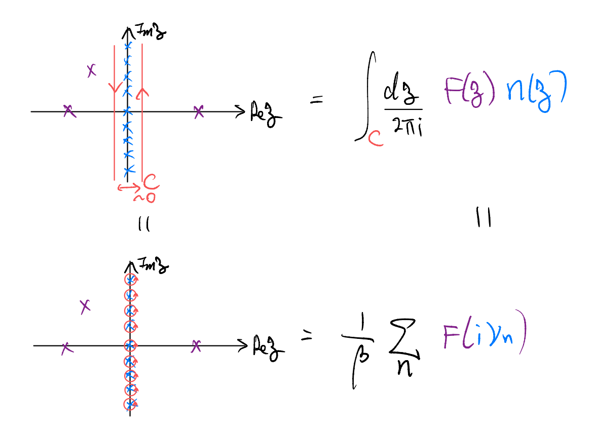
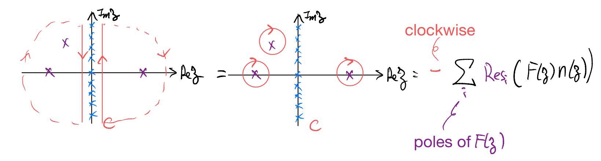
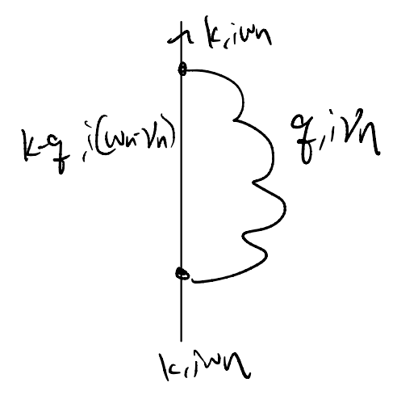
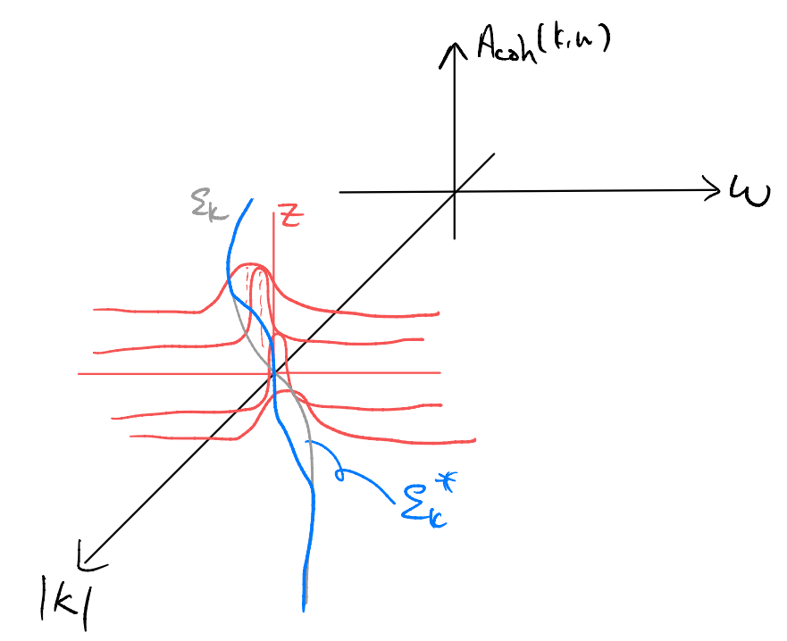
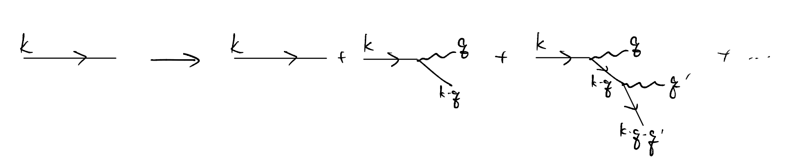

Contour integral for frequency summation
Generally speaking, finding the closed form solution of an infinite sum is quite challenging. But in our context, such closed forms are especially desirable since we will oftentimes be interested in analytically continuing the results to find, e.g., the retarded Green’s functions (c.f. PS6)
Thankfully, there’s a smart trick for evaluating such infinite series: If the summands could be understood as the residues of a meromorphic function, then we could “reverse” the residue theorem and recast the sum into a contour integral! Importantly, the contours integral might be much easier to evaluate when deformed, which them allows us to evaluate the series.
Now, in our context, we need to pose the following question: which function has poles at exactly the Matsubara frequencies.
\[\begin{split} \begin{cases}
i\omega _n=i\left( 2n+1 \right) \pi /\beta ,\quad \mathrm{fermionic}\\
i\nu _n=i2n\pi /\beta ,\quad \mathrm{bosonic}\\
\end{cases}\end{split}\]
If you still remember how we introduced these frequencies in the first place, you might recall the answer: these are exactly the poles for the respective thermal distribution functions! In other words, we expect (taking the bosonic case for instance)
\[n\left( \omega \right) =\frac{1}{e^{\beta \omega}-1}=c+\sum_{n=-\infty}^{\infty}{\frac{r_n}{\omega -i\nu _n}}\]
First, we can determine the residues \(r_n\) by letting \(\omega =i\nu_n+\delta\) with \(|\delta|\to 0\)
\[ \Rightarrow n\left( i\nu _n+\delta \right) =\frac{1}{e^{i\beta \nu _n}e^{\beta \delta}-1}=\frac{1}{e^{\beta \delta}-1}=\frac{1}{\beta \delta +O\left( \delta ^2 \right)}\]
\[ \Rightarrow r_n=\frac{1}{\beta}\]
Now suppose we have some function \(F(\zeta)\) which can have some simple poles but is analytic along the entire imaginary axis (this is stronger than needed; imposed for simplicity here). We now consider the contour integral

\[ \int_C{\frac{d\zeta}{2\pi i}F\left( \zeta \right) n\left( \zeta \right)}=\frac{1}{\beta}\sum_n{F\left( i\nu _n \right)}\]
Now further assuming that the function \(F(\zeta)n(\zeta)\) decays faster than \(\frac{1}{|\zeta|}\) as \(|\zeta|\to \infty\), we use the usual trick of “adding arcs at infinity” to close the contours

\[ \int_C{\frac{d\zeta}{2\pi i}F\left( \zeta \right) n\left( \zeta \right)}=-\sum_{i\in \mathrm{poles}\left( F \right)}{\mathrm{Res}\left[ F\left( \zeta \right) n\left( \zeta \right) \right]}\]
In other words, we can trade the infinite sum over the Matsubara frequencies with a sum over the (typically only a) handful of poles of \(F(\zeta)\)!
Note that, in the above, we argued the technique only for the case of summing bosonic frequencies for a function \(F(\zeta)\) with simple poles. THe generalization to the fermionic case is anticipated simply through replacing \(n(\omega)\to f(\varepsilon)\). (In that case, though, note that there will be a change of sign in the pole strengths.) However, for more general \(F(\zeta)\), one has to also handle potential branch cuts. These are discussed, e.g., in Coleman 8.3 (also Bruus-Flensberg if you want more details)
Evaluating the electron self-energy
With such preparation, we may now go back to evaluating the electron self-energy

\[\begin{split}
\begin{align*}
&=\frac{1}{\beta}\sum_{qn}{-g_{q}^{2}\frac{2\omega _q}{\left( i\nu _n \right) ^2-\omega _{q}^{2}}\frac{1}{i\left( \omega _n-\nu _n \right) -\varepsilon _{k-q}}}\\
&=-\sum_{q}{g_{q}^{2}\frac{1}{\beta}\sum_n{F\left( i\nu _n \right)}}
\end{align*}
\end{split}\]
where
\[F\left( \zeta \right) =\frac{2\omega _q}{\zeta ^2-\omega _{q}^{2}}\frac{1}{i\omega _n-\varepsilon _{k-q}-\zeta}\]
which has poles at
\[\zeta ^*=\omega _q,-\omega _q,i\omega _n-\varepsilon _{k-q}\]
To find out the residues it will be convenient to massage it slightly further
\[ F\left( \zeta \right) =\left( \frac{1}{\zeta +\omega _q}-\frac{1}{\zeta -\omega _q} \right) \frac{1}{\zeta -\left( i\omega _n-\varepsilon _{k-q} \right)}\]
and so we have
\[\begin{split}
\begin{align*}
\Sigma \left( k,i\omega _n \right) &\approx =-\sum_q{g_{q}^{2}\frac{1}{\beta}\sum_n{F\left( i\nu _n \right)}}\\
&=\sum_q{g_{q}^{2}\sum_i{\mathrm{Res}\left[ F\left( \zeta \right) n\left( \zeta \right) \right]}}\\
&=\sum_q{g_{q}^{2}\left( \frac{-n\left( -\omega _q \right)}{\omega _q+i\omega _n-\varepsilon _{k-q}}+\frac{-n\left( \omega _q \right)}{\omega _q-i\omega _n+\varepsilon _{k-q}} \right.}\\
&\quad \left. +n\left( i\omega _n-\varepsilon _{k-q} \right) \left( \frac{1}{i\omega _n+\omega _q-\varepsilon _{k-q}}-\frac{1}{i\omega _n-\omega _q-\varepsilon _{k-q}} \right) \right) \\
&=\sum_q{g_{q}^{2}\left( \frac{-n\left( -\omega _q \right) +n\left( i\omega _n-\varepsilon _{k-q} \right)}{i\omega _n+\omega _q-\varepsilon _{k-q}}+\frac{n\left( \omega _q \right) -n\left( i\omega _n-\varepsilon _{k-q} \right)}{i\omega _n-\omega _q-\varepsilon _{k-q}} \right)}
\end{align*}
\end{split}\]
the appearance of the fermionic frequencies \(i\omega_n\) inside the bosonic \(n(\omega)\) is a bit peculiar. Indeed, we can verify
\[ n\left( i\omega _n-\varepsilon _{k-q} \right) =\frac{1}{e^{i\omega _n\beta}e^{-\beta \varepsilon _{k-q}}-1}=\frac{-1}{e^{-\beta \varepsilon _{k-q}}+1}=f\left( \varepsilon _{k-1} \right) -1\]
\[ \Rightarrow \Sigma \left( k,i\omega _n \right) =\sum_q{g_{q}^{2}\left( \frac{n\left( \omega _q \right) +f\left( \varepsilon _{k-q} \right)}{i\omega _n-\left( \varepsilon _{k-q}-\omega _q \right)}+\frac{n\left( \omega _q \right) +1-f\left( \varepsilon _{k-q} \right)}{i\omega _n-\left( \omega _q+\varepsilon _{k-q} \right)} \right)}\]
While this expression could be readily evaluated numerically, it would be helpful to analyze it slightly further within some approximations and limits. We will use the “density of states” trick, which convert (e.g.) momentum integrals into energy ones. To this end, we first notice that it suffices to focus on the effect of e-ph coupling near the Fermi surface: for electrons deep inside (far outside) the Fermi surface, i.e., with energy \(\varepsilon\gg \omega_D\), the Debye frequency setting the energy scale of the phonons, we do not expect them to be affected by the e-ph coupling. Now, we observe that the only momentum dependence of \(\Sigma\) comes from its dependence on \(\varepsilon_{k-q}\). By definition, \(\varepsilon_{k-q}\approx 0\) near the Fermi surface. In other words, to good approximation we can drop the momentum dependence
\[\Sigma \left( k,\zeta \right) \approx \Sigma \left( \zeta \right) \]
where we have also replace the Matsubara frequency \(i\omega_n\) by a more general complex variable \(\zeta\).
More concretely, this can be achieved by explicitly averaging over the Fermi surface:
\[ \Sigma \left( \zeta \right) =\frac{\int{dS\Sigma \left( k_F\hat{k},\zeta \right)}}{\int{dS}}\]
where
\[ \int{dS}=\int_0^{\pi}{k_{F}^{2}\sin \theta d\theta \int_0^{2\pi}{d\phi}}\]
for a spherical Fermi surface. Next, we trade the sum over the (internal) integral by an energy integral. Rewrite
\[\begin{split}
\begin{align*}
\Sigma \left( k,\zeta \right) &=\sum_q{g_{q}^{2}\left( \frac{n\left( \omega _q \right) +f\left( \varepsilon _{k-q} \right)}{\zeta -\left( \varepsilon _{k-q}-\omega _q \right)}+\frac{n\left( \omega _q \right) +1-f\left( \varepsilon _{k-q} \right)}{\zeta -\left( \omega _q+\varepsilon _{k-q} \right)} \right)}\\
&=\sum_{k'}{g_{k-k'}^{2}\left( \frac{n_{k-k'}+f_{k'}}{\zeta -\left( \varepsilon _{k'}-\omega _{k-k'} \right)}+\frac{n_{k-k'}+1-f_{k'}}{\zeta -\left( \varepsilon _{k'}+\omega _{k-k'} \right)} \right)}
\end{align*}
\end{split}\]
and the sum over \(k\prime\) may be approximated by
\[ \sum_{k'}{}\sim \int{dS'dk_{\bot}^{'}}=\int{dS'\frac{1}{\left| d\varepsilon _{k'}/dk' \right|}d\varepsilon _{k'}}\approx \int{\frac{dS'd\varepsilon _{k'}}{V_F\left( S' \right)}}\]
where in the last step we essentially linearized the bare electronic dispersion around the Fermi surface. This allows us to trade the momentum integral with a Fermi surface integral, together with one over the electronic energy. Lastly, we may also trade phonon dispersion with an integral over some dummy frequency together with a delta-function
\[ h\left( \omega _q \right) =\int_0^{\infty}{d\nu h\left( \nu \right) \delta \left( \nu -\omega _q \right)}\]
Altogether, we have
\[\begin{split}
\begin{align*}
\Sigma \left( \zeta \right) &=\int_{-\infty}^{\infty}{d\varepsilon '\int_0^{\infty}{d\nu \frac{1}{\int{dS}}\int{\frac{dSdS'}{V_F\left( S' \right)}g_{k-k'}^{2}\delta \left( \nu -\omega _{k-k'} \right)}}}\\
&\quad \times \left( \frac{n\left( \nu \right) +f\left( \varepsilon ' \right)}{\zeta -\left( \varepsilon '-\nu \right)}+\frac{n\left( \nu \right) +1-f\left( \varepsilon ' \right)}{\zeta -\left( \nu +\varepsilon ' \right)} \right) \\
\end{align*}
\end{split}\]
It is customary to denote the Fermi surface integral by
\[ \alpha ^2\left( \nu \right) F\left( \nu \right) =\frac{1}{\int{dS}}\int{\frac{dSdS'}{V_F\left( S' \right)}g_{k-k'}^{2}\delta \left( \nu -\omega _{k-k'} \right)}\]
which can be viewed as a Fermi surface average of the e-ph coupling weighted by the density of states. We then arrive at
\[ \Sigma \left( \zeta \right) =\int_{-\infty}^{\infty}{d\varepsilon '\int_0^{\infty}{d\nu \alpha ^2\left( \nu \right) F\left( \nu \right) \left( \frac{n\left( \nu \right) +f\left( \varepsilon ' \right)}{\zeta -\left( \varepsilon '-\nu \right)}+\frac{n\left( \nu \right) +1-f\left( \varepsilon ' \right)}{\zeta -\left( \nu +\varepsilon ' \right)} \right)}}\]
To probe the physical properties of the system, let us go to the retarded version by setting \(\zeta \rightarrow \omega +i\delta\) (c.f. PS6)
\[\begin{split}
\begin{align*}
\Sigma ^{\mathrm{ret}}\left( \omega \right) &=\lim_{\delta \rightarrow 0^+} \Sigma \left( \omega +i\delta \right) \\
&=P\int_{-\infty}^{\infty}{d\varepsilon '\int_0^{\infty}{d\nu \alpha ^2\left( \nu \right) F\left( \nu \right) \left( \frac{n\left( \nu \right) +f\left( \varepsilon ' \right)}{\omega -\left( \varepsilon '-\nu \right)}+\frac{n\left( \nu \right) +1-f\left( \varepsilon ' \right)}{\omega -\left( \nu +\varepsilon ' \right)} \right)}}\\
&\quad -i\pi \int_{-\infty}^{\infty}{d\varepsilon '\int_0^{\infty}{d\nu \alpha ^2\left( \nu \right) F\left( \nu \right) \left[ \left( n\left( \nu \right) +f\left( \varepsilon ' \right) \right) \delta \left( \omega -\varepsilon '+\nu \right) \right.}}\\
&\quad \quad \left. +\left( n\left( \nu \right) +1-f\left( \varepsilon ' \right) \right) \delta \left( \omega -\varepsilon '-\nu \right) \right]
\end{align*}
\end{split}\]
Furthermore, consider the low-temperature limit in which
\[ n\left( \nu \right) \rightarrow 0,\quad f\left( \varepsilon \right) =\Theta \left( -\varepsilon \right) \]
We could evaluate the \(\varepsilon'\) integral and find
\[\begin{split}
\begin{align*}
\Re \left[ \Sigma _{\tau =0}^{\mathrm{ret}}\left( \omega \right) \right] &=P\int_{-\infty}^{\infty}{d\varepsilon '\int_0^{\infty}{d\nu \alpha ^2\left( \nu \right) F\left( \nu \right) \left( \frac{\Theta \left( -\varepsilon ' \right)}{\omega -\varepsilon '+\nu}+\frac{\Theta \left( \varepsilon ' \right)}{\omega -\nu -\varepsilon '} \right)}}\\
&=\int_0^{\infty}{d\nu \alpha ^2\left( \nu \right) F\left( \nu \right) \lim_{R\rightarrow \infty} \left[ \int_{-R}^0{\frac{d\varepsilon '}{\omega -\varepsilon '+\nu}}+\int_0^R{\frac{d\varepsilon '}{\omega -\varepsilon '-\nu}} \right]}\\
&=\int_0^{\infty}{d\nu \alpha ^2\left( \nu \right) F\left( \nu \right) \lim_{R\rightarrow \infty} \left[ \ln \left( \frac{\omega +R+\nu}{\omega +\nu} \right) +\ln \left( \frac{\omega -\nu}{\omega -\nu -R} \right) \right]}\\
&=\int_0^{\infty}{d\nu \alpha ^2\left( \nu \right) F\left( \nu \right) \lim_{R\rightarrow \infty} \ln \left( \frac{R+\nu +\omega}{R+\nu -\omega}\frac{\nu -\omega}{\nu +\omega} \right)}\\
&=\int_0^{\infty}{d\nu \alpha ^2\left( \nu \right) F\left( \nu \right) \ln \left( \frac{\nu -\omega}{\nu +\omega} \right)}
\end{align*}
\end{split}\]
In the low-frequency limit, we might expand
\[\begin{split}
\begin{align*}
\Re \left[ \Sigma _{\tau =0}^{\mathrm{ret}}\left( \omega \right) \right] &\approx \int_0^{\infty}{d\nu \alpha ^2\left( \nu \right) F\left( \nu \right) \left( -\frac{2\omega}{\nu}+\cdot s \right)}\\
&=-2\left[ \int_0^{\infty}{d\nu \frac{\alpha ^2\left( \nu \right) F\left( \nu \right)}{\nu}} \right] \omega \\
&=-\lambda \omega
\end{align*}
\end{split}\]
As we will soon see, such frequency dependence ultimately translates into a reduction of the quasi-particle weight.
The meaning of the parameter \(\lambda\) will become clearer if we recast it back into the full form
\[\begin{split}
\begin{align*}
\lambda &=2\int_0^{\infty}{d\nu \frac{1}{\int{dS}}\int{\frac{dSdS'}{V_F\left( S' \right)}\delta \left( \nu -\omega _{k-k'} \right) \frac{g_{k-k'}^{2}}{\nu}}}\\
&=\frac{2}{\int{dS}}\int{\frac{dSdS'}{V_F\left( S' \right)}\frac{g_{k-k'}^{2}}{\omega _{k-k'}}}\\
&>0
\end{align*}
\end{split}\]
This combination may look familiar: back in the impurity-phonon problem, we found that the energy correction to the impurity takes the form \(\sim \sum_q{M_{iq}^{2}/\omega_q}\), where \(M_{iq}\) is e-ph coupling parameter there. Here, what we have is essentially a Fermi-surface averaging of the coupling!
Next, let us look into the imaginary part
\[\begin{split}
\begin{align*}
\Im \left[ \Sigma _{\tau =0}^{\mathrm{ret}}\left( \omega \right) \right] &=-\pi \int_{-\infty}^{\infty}{d\varepsilon '\int_0^{\infty}{d\nu \alpha ^2\left( \nu \right) F\left( \nu \right)}}\\
&\quad \times \left[ \Theta \left( -\varepsilon ' \right) \delta \left( \omega -\varepsilon '+\nu \right) +\Theta \left( \varepsilon ' \right) \delta \left( \omega -\varepsilon '-\nu \right) \right] \\
&=-\pi \int_{-\infty}^{\infty}{d\varepsilon '\left[ \Theta \left( -\varepsilon ' \right) \Theta \left( \varepsilon '-\omega \right) \alpha ^2\left( \varepsilon '-\omega \right) F\left( \varepsilon '-\omega \right) \right.}\\
&\quad \left. +\Theta \left( \varepsilon ' \right) \Theta \left( \omega -\varepsilon ' \right) \alpha ^2\left( \omega -\varepsilon ' \right) F\left( \omega -\varepsilon ' \right) \right] \\
&=-\pi \left[ \int_{\min \left( 0,\omega \right)}^0{d\varepsilon '\alpha ^2\left( \varepsilon '-\omega \right) F\left( \varepsilon '-\omega \right)}+\int_0^{\max \left( 0,\omega \right)}{d\varepsilon '\alpha ^2\left( \omega -\varepsilon ' \right) F\left( \omega -\varepsilon ' \right)} \right]
\end{align*}
\end{split}\]
Notice the interesting feature that \(\Im \left[ \Sigma _{\tau =0}^{\mathrm{ret}}\left( \omega \rightarrow 0 \right) \right] \rightarrow 0\)! We may now tie all these discussions together by looking at the electron spectral function, which is given by the imaginary part of the retarded propagator:
\[\begin{split}
\begin{align*}
A\left( k,\omega \right) &=\frac{-1}{\pi}\Im \left[ G^{\mathrm{ret}}\left( k,\omega \right) \right] \\
&=\frac{-1}{\pi}\lim_{\delta \rightarrow 0^+} \Im \left[ G\left( k,\omega +i\delta \right) \right] \\
&=\frac{-1}{\pi}\lim_{\delta \rightarrow 0^+} \Im \left[ \frac{1}{\mathcal{G} _{0}^{-1}\left( k,\omega +i\delta \right) -\Sigma \left( \omega +i\delta \right)} \right] \\
&=\frac{-1}{\pi}\lim_{\delta \rightarrow 0^+} \Im \left[ \frac{1}{\omega +i\delta -\varepsilon _k-\Re \left[ \Sigma ^{\mathrm{ret}}\left( \omega \right) \right] -i\Im \left[ \left[ \Sigma ^{\mathrm{ret}}\left( \omega \right) \right] \right]} \right] \\
&\Downarrow \omega \sim 0\\
&\approx A_{\mathrm{coh}}\left( k,\omega \right) +\cdots
\end{align*}
\end{split}\]
\[ A_{\mathrm{coh}}\left( k,\omega \right) =\frac{-1}{\pi}\lim_{\delta \rightarrow 0^+} \Im \left[ \frac{1}{\omega -\varepsilon _k+\lambda \omega +i\delta -i\Im \left[ \left[ \Sigma ^{\mathrm{ret}}\left( \omega \right) \right] \right]} \right] \]
where we have given a name to the leading piece (will be clearer later). Let’s further clean it up by defining
\[ \mathcal{Z} =\frac{1}{1+\lambda}\]
\[ \varepsilon _{k}^{*}=\frac{\varepsilon _k}{1+\lambda}\]
\[ \Gamma _{\omega}^{*}=-\frac{2\Im \left[ \Sigma ^{\mathrm{ret}}\left( \omega \right) \right]}{1+\lambda}\ge 0\]
\[\begin{split}
\begin{align*}
\Rightarrow A_{\mathrm{coh}}\stackrel{\omega\sim 0}{\approx}\frac{-1}{\pi}\lim_{\delta \rightarrow 0^+} \Im \left[ \frac{\mathcal{Z}}{\omega -\varepsilon _{k}^{*}+i\Gamma _{\omega}^{*}/2+i\delta} \right] \\
&=\begin{cases}
\frac{1}{2\pi}\frac{\mathcal{Z} \Gamma _{\omega}^{*}}{\left( \omega -\varepsilon_{k}^{*} \right) ^2+\left( \Gamma _{\omega}^{*} \right) ^2/4},\quad \mathrm{if}\; \Gamma _{\omega}^{*}>0\\
\mathcal{Z} \delta \left( \omega -\varepsilon _{k}^{*} \right) ,\quad \mathrm{if}\; \Gamma _{\omega}^{*}=0\\
\end{cases}\\
\end{align*}
\end{split}\]
The piece corresponding to \(\Gamma_\omega^*>0\) is simply the Lorentzian, which is normalized as
\[ \frac{1}{2\pi}\int_{-\infty}^{\infty}{d\omega \frac{\Gamma _{\omega}^{*}}{\left( \omega -\varepsilon _{k}^{*} \right) ^2+\left( \Gamma _{\omega}^{*} \right) ^2/4}}=1\]
and since it recovers the delta function in the limit \(\Gamma _{\omega}^{*}\rightarrow 0^*\), we may combine the two pieces simply as
\[ A_{\mathrm{coh}}=\frac{1}{2\pi}\frac{\mathcal{Z} \Gamma _{\omega}^{*}}{\left( \omega -\varepsilon _{k}^{*} \right) ^2+\left( \Gamma _{\omega}^{*} \right) ^2/4}\]
We may now sketch it schematically

If you still recall, this is exactly the Fermi-liquid behavior we mentioned!
Note: but our zero-temperature calculation is a bit of a lie: in reality there’s a superconducting instability!
To unpack the physics further, we note that:
We lose the delta-function spectral function characteristic of the free-fermion problem in the present case, due to a generally finite particle decay rate, which can be represented schematically as

in other words, as the electron moves, it drags around it a cloud of phonons. Such dressing modifies the properties of the electron!
Nevertheless, exactly on the Fermi surface we have no “room” to decay, and that recovers a sharp delta function. However, the quasi-particle weight \(\mathcal{Z}=\frac{1}{1+\lambda}<1\) (with the rest of the spectral weight transferred to the “incoherent” background)
The dressing also modifies the effective mass of the electrons as
\[ \varepsilon _{k}^{*}=\frac{\varepsilon _k}{1+\lambda}=\frac{k^2}{2m^*}-\frac{\mu}{1+\lambda}\]
\[ m^*=\left( 1+\lambda \right) m\]
\[ \Rightarrow \frac{m^*}{m}=1+\lambda >1\]
i.e., the electrons become effectively more massive due to the dressing by phonons! A simple physical picture is that, within an energy windows of size \(\omega_D\) or so, the e-ph coupling renormalizes the electronic energy towards \(0\). This leads to a smaller effective Fermi velocity, and bigger effective mass, and a bigger effective density of states.
For an illustration in a specific model, see, e.g. Coleman Example 8.7.